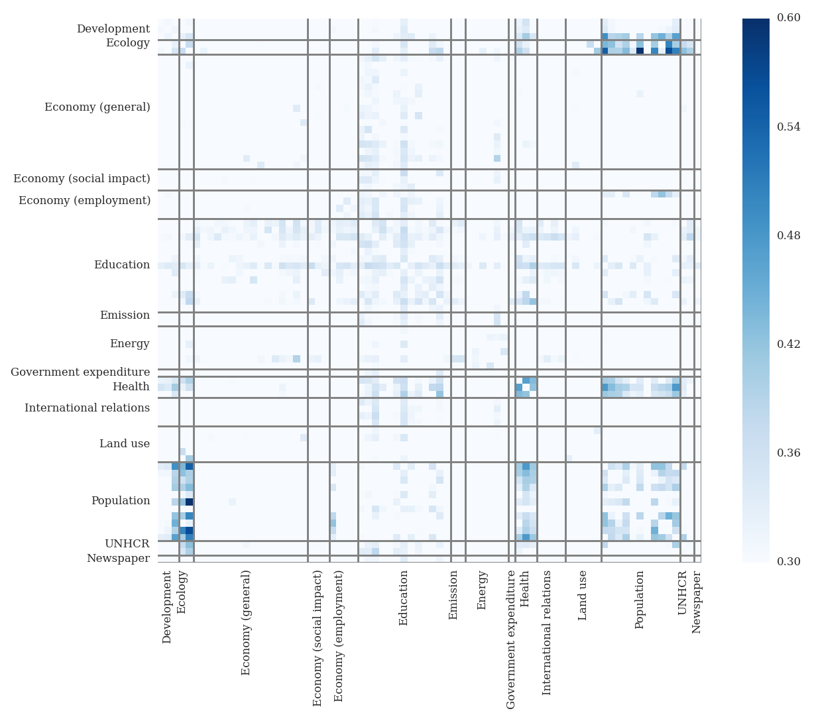

Aug. 27, Update: The source code is now available on GitHub
Data for social impact.
With growing awareness that open data can be for the benefit of society, an increasing number of datasets is made available for public use. The advent of the Big Data buzzword and, more importantly, the increasing popularity of using Machine Learning to extract information from data has triggered an interest in applying these techniques for social good. Coming from an academic background in biophysics I recently decided to move to Data Science. This project is my playground to explore ways to combine and use some of these datasets, to improve my problem solving skills, to learn more about Machine Learning techniques, and, hopefully, to get some insights into interrelationships between aspects of our lives that influence our living together.
Sneak preview.
Before delving into more detail here a small outlook to what we might find. The following plot shows the standard deviations of the correlations between each variable across all countries (read the full story of the plot here).  There are three aspects that strike me most. The variation in correlations between population and ecology measures, indicates that interdependences between them are present, however, these trends do not apply on a global scale. The same is true for the relation between population and health indicators. This suggests that one needs to look into these relationships on a more personalised level. By looking at the relationships on a local scale, true insight might be gained. Education was declared a human right by the UNESCO (The Right to Education) and legal obligations have been put down to enforce this right. This immediately brings to question how this enforcement is best put into place. The variations in the correlation matrix that can be observed across the relationship of education measures with almost all other indicators should make us wary of any one-rule-fits-all solution. Although these prelimary findings are very interesting in themselves, I am interested in another problematic that I am trying to address with this project.
Motivation.
Migration and the resettlement of refugees is a problem that has seen a dramatic increase in Europe in the past months. On the World Refugee Day 2015 the European Comission stated that "Almost 60 million people are displaced worldwide – the world has not seen so many people fleeing conflict since the Second World War"[link]. According to a report from Amnesty International we are drastically failing to find a humanitrian response to the crisis. Even rich countries like Germany struggle to accomodate the newly arriving refugees seeking a safe harbor from war and crisis (see for example this article in the German newspaper Die Zeit). But not only do we fail to find an immediate response, according to an article published in The Guardian, we also fail to analyse the problem and to find appropriate long-term measures to face the crisis. This humanitarian crisis will be further intensified by the ecological crises climate change is invoking. As the Intergovernmental Panel on Climate Change (IPCC) states in its 2014 report: "In recent decades, changes in climate have caused impacts on natural and human systems on all continents and across the oceans. Impacts are due to observed climate change, irrespective of its cause, indicating the sensitivity of natural and human systems to changing climate." Getting insights into interrelations between our behaviour, migration movement, and climate impact, are thus of great importance to face the challenges of our time.
What kind of data?
One requirement of a good dataset to address the above mentioned topic is global coverage. Migration does not stop at country boundaries and so should the data used. The World Bank, an international organisation with 188 member states, provides an open data portal containing indicators about development in countries around the world. This data covers, amongst others, indicators about development, education, economy, energy and emissions, population, and provides a rich resource of information. In total ~140 indicators are combined into one dataset. Migration and refugee statistics are e.g. published by the World Refugee Agency (UNHCR) as well as by the Organisation for Economic Co-operation and Development (OECD). The published datasets from both organisations are integrated for the project. These datasets (should) represent the hard facts about the measured indicators. In order to assess how well these indicators align with a public "awareness", the number of articles published in the New York Times, as returned by a search query containing only the country name as keyword, was collected. This, although limited to an US centric view, might still reveal insights about how we perceive upcoming challenges. [Update August 27] In addition to the data described above I added climate related data to the project. Given the urgency of global warming it felt as if this is a must when looking at migration. Read more about the climate data in this notebook.
About.
I started this project during my time as fellow of Data Science Europe and am very grateful for all the input and support!